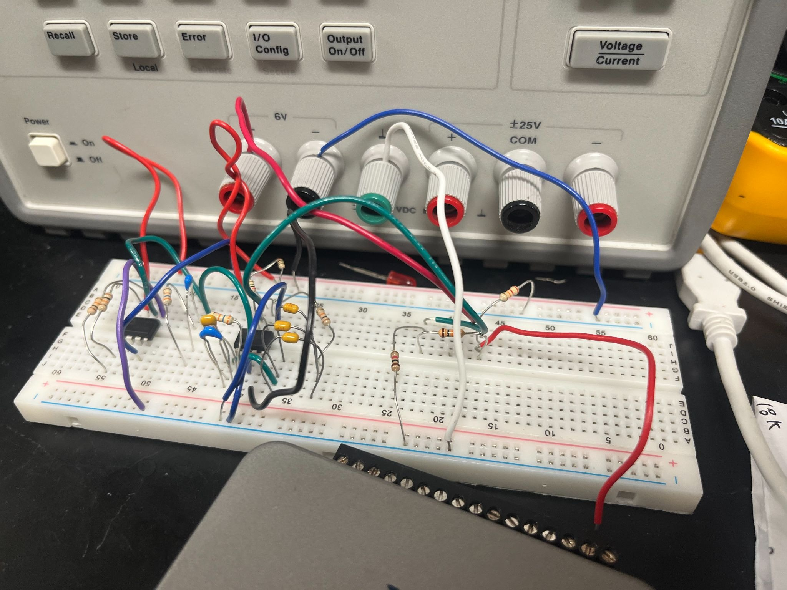

From a simple flex of my arm, I watched a Mario Kart accelerate.
Muscle Mario is a novel bioelectric signal-mediated game control system. By flexing their arms, players control the acceleration of the Mario Kart in real time. As part of the team, I built the interface that captures muscle signals and translates them into in-game commands, creating an intuitive bridge between human movement and machine control.
Demo
By flexing and relaxing arm muscles, players generate electrical signals that are captured, processed, and translated into keyboard commands, allowing them to steer and accelerate in Mario Kart using muscle activity alone.
Control Keys:
Direction: ← E → R
Flex: Accelerate
Relax: Slow Down
System Design
Signal Collection
Skin electrodes were placed on the arm to capture the electrical activity generated during muscle contraction and relaxation. These electrodes connected via sensor cables to an audio jack with a 3-terminal block, allowing separate wiring for the positive, negative, and ground signal lines. This setup formed the raw input stage of the system, capturing the small electrical voltages produced by motor unit action potentials before any processing occurred.
Signal Processing

In this project, I built the signal-processing circuit and co-developed the control logic that translates muscle activity into game controls:
- Developed a multi-stage operational amplifier circuit to filter out noise and amplify muscle signals (within 20–450 Hz); adapted the circuit to support signal output to Arduino Zero.
- Designed and set up a LabVIEW VI that displays EMG activity on a waveform graph to verify signal detection and validate amplifier and filter design through inputs from data acquisition system (DAQ).
- Implemented temporal hysteresis and threshold-based filtering into signal-processing algorithms to classify arm muscle activity into game control inputs.
Skills: analog circuit design, signal filtering and amplification, LabVIEW signal visualization, Arduino programming
Signal Output
The processed EMG signal was fed into an Arduino Zero, which interpreted signal strength to distinguish between arm flexion and relaxation. A calibration step established a personalized baseline for each user, allowing the system to set thresholds that reliably discriminated between "key press" and "key release" states. These digital signals were then translated into keyboard inputs, which controlled acceleration in the Mario Kart game emulator.
Future Outlook
Seeing how intense physiological spikes drive kart acceleration, I recognized the potential of this new control modality in enabling individuals with limited mobility to engage in gameplay without joystick controls. For individuals with limited hand or arm mobility, an EMG-based interface could offer a way to engage with gameplay using muscle signals alone, regardless of fine motor control. Looking ahead, this could be extended to support customizable, low-effort input mappings, opening up gaming and interactive experiences to a wider range of users.